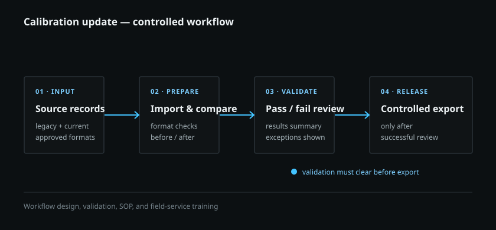

01 · Process design
01 · Process design
Documentation migration tool
Converted an approved content plan into a dry-run, backed-up, verified live documentation restructure.
AutomationVerification
Read the case study
Selected engineering work
Representative systems, calibration, and process-improvement work. Public pages use neutral branding and omit proprietary product, customer, and test details.
These examples distill the engineering methods behind professional work without reproducing customer data, proprietary systems, internal documentation, or product details.
01 · Process design
Converted an approved content plan into a dry-run, backed-up, verified live documentation restructure.
 02 · Test method
02 · Test method
Rebuilt a legacy stage-quality process and made its data checks and analysis repeatable.

03 · AutomationA safer route from varied measurement inputs to validated, operator-ready calibration output.